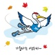
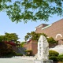

- 인천시청블로그인천광역시 공식 블로그 온통인천
- 인천시청포스트온통인천
- 강화군블로그2018 올해의 관광도시 강화
- 계양구블로그계양구청 공식 블로그
- 남구블로그더 많은 일자리, 더 건강한 공동체, 통통통 착한남구
- 남동구포스트인천광역시 남동구청
- 부평구블로그부평구청 블로그 공감부평
- 서구포스트인천광역시 서구
- 연수구블로그연수구 공식 블로그 행복투유
- 중구블로그인천중구 공식블로그 하트♥투 유
- 인천경제자유구역청블로그IFEZ 관광먹거리 블로그
- 공항철도블로그공항철도
- 인천관광공사블로그인천관광공사 공식 블로그
- 인천시교육청블로그인천광역시교육청 공식 블로그
- 인천교통공사블로그인천교통공사 홍보 블로그입니다.
- 인천문화재단블로그(재)인천문화재단의 공식 블로그입니다.
- 인천시립박물관블로그인천광역시립박물관
- 인천광역시의료원블로그만나면 건강해지는 인천의료원
- 인천환경공단남항사업소블로그인천환경공단 남항사업소
- 강화군시설관리공단블로그2018 올해의 관광도시 선정, 강화군시설관리공단
- 부평구 문화재단블로그부평구문화재단 공식 블로그
- 인천서구문화회관블로그인천서구문화회관 공식 블로그
- 인천중구시설관리공단블로그인천광역시 중구시설관리공단
- 경인일보포스트경인일보
- 인천일보포스트인천일보
- 중부일보포스트중부일보